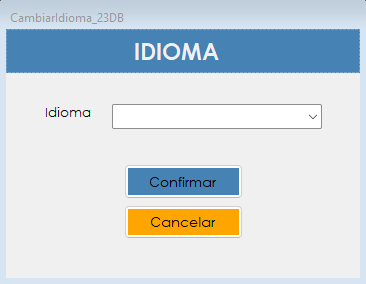

Permite elegir el idioma en el que AeroManager muestra sus pantallas y mensajes. La elección queda guardada para los próximos ingresos del usuario.
AeroManager puede ser usado por personas que prefieren trabajar en distintos idiomas. Esta pantalla permite que cada usuario elija el suyo, sin afectar a los demás: la preferencia queda asociada a su cuenta y se aplica cada vez que inicia sesión.
El cambio se aplica en el momento. No hace falta salir del sistema: el menú principal se actualiza apenas se confirma la selección.
Desde el menú principal, en Usuario › Cambiar Idioma. Esta opción está disponible para todos los usuarios y no depende de las patentes del rol.

| Control | Para qué se usa |
|---|---|
| Idioma | Lista de los idiomas disponibles en el sistema. Al abrir la pantalla aparece seleccionado el idioma en uso. Si el usuario todavía no eligió ninguno, la lista aparece vacía. |
| Confirmar | Aplica el idioma elegido y lo guarda en la cuenta del usuario. |
| Cancelar | Cierra la pantalla sin cambiar nada. |
| Situación | Qué significa y qué hacer |
|---|---|
| "Debe seleccionar un idioma." | Se presionó Confirmar sin haber elegido ninguna opción. Hay que seleccionar un idioma de la lista. |
| "El idioma seleccionado ya está en uso." | El idioma elegido es el que el sistema ya está mostrando, por lo que no hay nada que cambiar. Se puede elegir otro o salir con Cancelar. |
| "La operación se registró correctamente, pero no pudo asentarse en la Bitácora:" seguido del motivo | El idioma se cambió, pero el evento no quedó registrado en la bitácora. Después de los dos puntos se muestra el motivo técnico del fallo. Conviene avisarle al administrador. |
| "Idioma cambiado correctamente." | El cambio se realizó y quedó guardado para los próximos ingresos. |
Textos que no cambian. La pantalla de inicio de sesión y la de reparación de inconsistencias se muestran siempre en español. Tampoco se traducen los valores fijos de las listas desplegables, como los medios de pago o los estados de una aeronave, ni los datos cargados en el sistema.